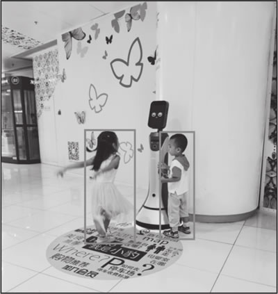
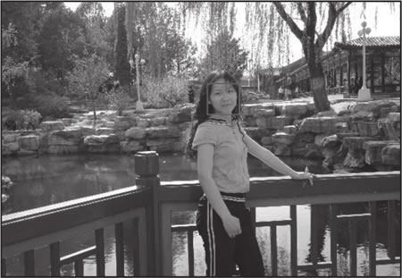

首页 > 编程笔记
目标检测介绍（非常详细）
计算机视觉（Computer Vision，CV）是一门教计算机如何“看”世界的学科。计算机视觉包含多个分支，其中图像分类、目标检测、图像分割、目标跟踪等是计算机视觉领域最重要的研究课题。
目标检测包含两层含义：
目标检测和图像分类最大的区别在于目标检测需要做更细粒度的判定，不仅要判定是否包含目标物体，还要给出各个目标物体的具体位置。
如下图所示，目标检测算法关注的是“人体”这一特定目标物体，图像中不但检测出了两个小朋友（人体），还准确地框出了两个小朋友在图像中的位置。
Viola Jones 检测器采用最直接的滑动窗口方法，检测框遍历图像上所有的尺度和位置，查看检测框是否包含人脸目标。这种滑动窗口看似简单，却需要耗费非常多的计算时间。
Viola Jones 检测器的优势在于使用了积分图像、特征筛选、级联检测的策略，使得算法速度有了巨大的提升。该检测器使用 Hear 特征，通过积分图像的技巧，大幅减少了特征的重复计算。在特征选择上，Viola Jones 检测器基于 Adaboost 方法，从大量特征中选出若干适合检测任务的特征。在检测过程中，Viola Jones 检测器使用检测步骤级联的方式，更聚焦于目标的确认，避免在背景区域耗费过多的计算资源。
DPM 在特征层面对经典的 HOG 特征进行了扩展，也使用了滑动窗口方法，基于 SVM 进行分类，其核心思想是将待检测目标拆分成一系列部件，把检测一个复杂目标的问题转换成检测多个简单部件的问题。例如，将检测汽车转换成分别检测窗子、车体和车轮这 3 个部件。
虽然如今检测算法的性能已经远超 DPM，但 DPM 采用的问题拆分思想对后续检测算法的发展起到了深远的影响，现在很多检测问题都基于这一思想设计解决方案。也正因如此，P.Felzenszwalb 和 R.Girshick 在 2010 年获得了 PASCAL VOC 授予的终身成就奖。
直到 2012 年，基于卷积神经网络（CNN）的特征在图像分类任务中取得了巨大的进展，CNN 特征重新被业界重视起来。2014 年 R.Girshick 等人将 CNN 特征应用到了目标检测场景中，此后，目标检测算法有了飞速的发展。
从算法处理的流程来划分，基于深度学习的目标检测算法可分为两阶段（Two-Stage）算法和一阶段（One-Stage）算法，两阶段算法需要先进行候选框的筛选，然后判断候选框是否框中了待检测目标，并对目标的位置进行修正；一阶段算法没有筛选候选框的过程，而是直接回归目标框的位置坐标和目标的分类概率。
① R-CNN算法
2014 年，R.Girshick 等人提出了 R-CNN 算法。R-CNN 算法的思路非常简单，首先基于 Selective Search 方法从原始图像中筛选出若干候选框，然后将每个候选框中的图像缩放的固定尺度送入卷积网络提取特征，最后通过支持向量机（SVM）方法对特征进行分类，判断候选框中的图像是背景还是我们关注的目标类型。
在 VOC2007 数据集上，R-CNN 算法相比之前的检测算法，在性能有了显著的提升（从 33.7% 提升到 58.5%），是检测算法的一个里程碑式的突破。
虽然 R-CNN 在算法性能上取得了巨大的进展，但弊端也非常明显，因为需要分别从 2000 多个候选框中提取特征，所以效率非常低，后续各种算法正是为了解决这一问题而提出的一系列改进方案。
② SPP-Net算法
2014 年，何恺明等人提出了 SPP-Net（Spatial Pyramid Pooling Networks，空间金字塔池化网络）算法。
R-CNN 算法要求输入卷积网络用来提取特征的子图像尺寸固定，比如Alex-Net就要求输入的图像大小为固定的 224 × 224 像素，而 SPP-Net 算法则去掉了这一限制。
SPP-Net 算法基于一个空间金字塔池化层（SPP layer），无论输入的子图像大小如何，都会将子图像采样成固定大小的图像。在使用 SPP-Net 进行检测的过程中，对原始图像只需要进行一次卷积网络计算，在得到整幅图像的特征图之后，通过空间金字塔池化层将每个候选框区域（ROI）都分别采样成相同尺寸的子图像，将相同尺寸的各个子图像送入后续的网络进行特征提取，提取的特征具有相同的维数，最后送入全连接层进行分类。
SPP-Net 不需要进行多次卷积网络计算，与 R-CNN 相比，在算法精度不变的情况下，算法的速度有了 20 倍的大幅提升。
③ Fast R-CNN算法
2015 年，R.Girshick 等人提出了 Fast R-CNN 算法，其本质是在 R-CNN 和 SPP-Net 的基础上进行了进一步改进。Fast R-CNN 可以在网络里同时预测目标的分类概率和位置偏移。
在 VOC2007 数据集上，Fast R-CNN 将 mAP（mean Average Precision，平均精度均值）从 58.5% 提升至 70.0%，算法速度也比 R-CNN 有了 200 倍的提升。虽然 Fast R-CNN 的性能和速度相比 R-CNN 和 SPP-Net 有了明显的改善，但整体速度仍然受到候选框检测算法的制约，为了解决这个问题，Faster R-CNN 算法诞生了。
④ Faster R-CNN算法
2015 年，S.Ren 等人提出了 Faster R-CNN 算法，Faster R-CNN 是第一个端到端算法，也是第一个接近实时深度学习的目标检测算法。使用 ZF-Net 网络骨架，在 VOC2007 数据集上，mAP 达到了 73.2%，算法速度达到了 17fps。
Faster R-CNN 最主要的贡献是使用卷积网络检测候选框。检测候选框、预测目标的类别、回归目标位置的偏移量，共享底层卷积特征，整个算法流程融合成了一个完整的端到端学习框架。Faster R-CNN 突破了候选框检测的速度瓶颈，是一种十分重要的两阶段算法。
⑤ FPN算法
2017 年，Lin 等人在 Faster R-CNN 的基础上提出了 FPN（Feature Pyramid Net works，特征金字塔策略）算法。
在 FPN 之前，绝大多数深度学习检测器都是基于卷积网络最顶层的特征图进行计算的。深层特征包含全局信息，却弱化了细节信息，使用深层特征在小目标检测，尤其是精准定位方面，有着较大的劣势。
FPN 采用 top-down 结构以及侧连方法，将深层特征和浅层特征进行融合，使得特征既包含全局信息又包含细节信息。另外，检测计算也基于特征金字塔的多层特征图，具有更强的多尺度适应性。基于 FPN 的 Faster R-CNN 算法在 COCO 数据集上取得了最优的性能。当前，FPN 已经成为构建检测算法的基础策略。
常用的一阶段算法如下：
① YOLO算法
2015 年，R.Joseph 等人提出了 YOLO（You Look Only Once）算法，这是首个深度学习领域的一阶段算法。
从名字就可以看出，YOLO 没有两阶段算法中提取候选框和验证分类两个步骤，图像送入一个神经网络就能完成整个预测过程。YOLO 算法的实现方案是，先把原始图像划分成网格，然后基于网格的每个单元格回归目标的类别概率和位置坐标。
作为一阶段算法，YOLO 的一个最大优点就是速度快，在 VOC2007 数据集上，mAP 为 63.4%，检测算法速度可以达到 45fps；YOLO 的加速版本 mAP 为 52.7%，速度甚至可以达到惊人的 155fps。
不过，YOLO 也有不尽如人意的地方，在目标位置的精度上比两阶段算法有所降低，尤其是在对一些小目标的检测方面，效果明显变差。正因为存在这些问题，后续 YOLO 的版本以及其他一阶段算法，都致力于更好地解决上述问题。
② SSD算法
2015 年，W.Liu 等人提出了 SSD（Single Shot MultiBox Detector）算法，这是深度学习领域的第二个一阶段算法。
与仅使用最顶层特征图进行预测的方法不同，SSD 最主要的贡献是引入了基于多尺度特征图的检测策略，显著提升了算法的性能，尤其是在小目标检测方面，相比 YOLO 有了明显的改善，在 VOC2007 数据集上，mAP 达到了 76.8%。
③ Retina-Net算法
Retina-Net 算法的主要目的是解决正负样本不平衡的问题。常规的一阶段算法在提取训练样本的过程中，背景样本的比例远大于目标样本的比例。正负样本的极度不平衡会导致训练过程中模型较少关注目标样本，这也是一阶段算法的精度低于两阶段算法的主要原因。
Retina-Net 算法引入了损失函数，其核心思想是在训练过程中，对传统的交叉熵损失加上权重，使得错分的样本产生的损失在最终损失中占有更大的比例。引入损失函数，使得一阶段算法在保持速度优势的前提下，保证了目标检测的精度。
④ FCOS算法
2019 年，沈春华团队提出了 FCOS（Fully Convolutional One-Stage）算法。和 SSD 等一阶段算法不同，FCOS 是一种“anchor free”方法，回归目标位置不需要预先设定 anchor，在待检测目标尺度和形态变化较大的场景中有重要的应用。
另外，FCOS 算法在具体实现的过程中也使用了 FPN 策略，对于多尺度的目标有更好的检测效果。
人脸识别系统主要包括 4 个部分，分别为人脸图像采集/检测、人脸图像预处理、人脸图像特征提取以及身份匹配与识别。其中人脸图像采集/检测是进行后续识别的基础。
如图 2 所示，通过检测框把后续识别算法的处理区域从整个图像限制到人脸区域。近年来，人脸识别技术已经取得了长足的发展，目前广泛应用于公安、交通、支付等多个实际场景。
从根本上看，交通场景中各种具体应用的底层实现，都是以目标检测技术为基础的，即对道路、车辆以及行人进行检测。
在目标检测方向，最常用的评测集是 VOC2007 和 VOC2012。评测集包含 20 类日常生活中常见的物品，分别是人、鸟、猫、奶牛、狗、马、羊、飞机、自行车、船、公共汽车、小轿车、摩托车、火车、瓶子、椅子、餐桌、盆栽、沙发、电视。VOC2007 包含 5000 张训练图像和 1.2 万个标注目标；VOC2012 包含 1.1 万张训练图像和 2.7 万个标注目标。不过，随着近几年更大规模评测集的发布，VOC 评测集的重要性正在逐步降低。
ILSVRC 的目标检测的评测集包含 200 种类别，评测集中图像的数量和目标的数量比 VOC 的评测集高两个数量级。以 ILSVRC-14 评测集为例，其中包含 51.7 万张训练图像和 53.4 万个标注目标。
MS-COCO 包含的检测目标类别不及 ILSVRC，但包含更多实例。以 MS-COCO-17 为例，其中包含 80 个类别，16.4 万张训练图像和 89.7 万个标注目标。
与 VOC 和 ILSVRC 相比，MS-COCO 最大的进步在于除了标注每个目标实例的包围盒之外，还标注了每个实例的分割信息。
除此之外，MS-COCO 包含了很多小目标（占有区域不足整幅图像的 1%）以及众多密集目标。这些特点使得 MS-COCO 的数据分布更接近真实世界，因此成为目前目标检测领域最为重要的评测集之一。
其中检测任务的评测集包含 600 种目标类别，合计 191 万张训练图像和 1544 万个标注目标。
什么是目标检测
本节讨论的目标检测是指通过编写特定的算法代码，让计算机从一张图像中找出若干特定目标的方法。目标检测包含两层含义：
- 判定图像上有哪些目标物体，解决目标物体存在性的问题；
- 判定图像中目标物体的具体位置，解决目标物体在哪里的问题。
目标检测和图像分类最大的区别在于目标检测需要做更细粒度的判定，不仅要判定是否包含目标物体，还要给出各个目标物体的具体位置。
如下图所示，目标检测算法关注的是“人体”这一特定目标物体，图像中不但检测出了两个小朋友（人体），还准确地框出了两个小朋友在图像中的位置。

图 1 人体检测示例
图 1 人体检测示例
目标检测技术发展简史
在过去的二十几年里，以 2014 年为分界点，目标检测技术大致可分为两个阶段：在 2014 年之前，目标检测问题都基于传统算法；在 2014 年之后，目标检测问题主要基于深度学习算法。1、传统算法
在传统算法阶段，检测器完全依靠人工设计特征。人们使用了非常多的技巧，目的在于让检测器获取更强的表达能力，同时尽可能地降低对计算资源的消耗。其中，有几种检测器的出现对目标检测技术的发展产生了重要影响。1) Viola Jones检测器
Viola Jones 检测器是 P.Viola 和 M.Jones 针对人脸检测场景提出的。在同等的算法精度下，Viola Jones 检测器比同时期的其他算法有几十到上百倍的速度提升。Viola Jones 检测器采用最直接的滑动窗口方法，检测框遍历图像上所有的尺度和位置，查看检测框是否包含人脸目标。这种滑动窗口看似简单，却需要耗费非常多的计算时间。
Viola Jones 检测器的优势在于使用了积分图像、特征筛选、级联检测的策略，使得算法速度有了巨大的提升。该检测器使用 Hear 特征，通过积分图像的技巧，大幅减少了特征的重复计算。在特征选择上，Viola Jones 检测器基于 Adaboost 方法，从大量特征中选出若干适合检测任务的特征。在检测过程中，Viola Jones 检测器使用检测步骤级联的方式，更聚焦于目标的确认，避免在背景区域耗费过多的计算资源。
2) HOG检测器
HOG（Histogram of Oriented Gradients，梯度方向直方图）特征是一种重要的尺度不变特征，由 N.Dalal 和 B.Triggs 于 2005 年提出，核心思想是用规则的网格将图像划分成大小相同的子块，在每一个子块中计算梯度方向直方图。通过这种方式，可以大大消除尺度变化和光照的影响。在相当长的时间里，HOG 都是处理检测问题的一种重要特征，尤其是在行人检测场景，HOG 有着极为重要的应用。3) DPM检测器
DPM（Deformable Part Model，可变形组件模型）是一种基于组件的检测算法，由 P.Felzenszwalb 于 2008 年提出，后来 R.Girshick 对其进行了多项重要改进。DPM 在特征层面对经典的 HOG 特征进行了扩展，也使用了滑动窗口方法，基于 SVM 进行分类，其核心思想是将待检测目标拆分成一系列部件，把检测一个复杂目标的问题转换成检测多个简单部件的问题。例如，将检测汽车转换成分别检测窗子、车体和车轮这 3 个部件。
虽然如今检测算法的性能已经远超 DPM，但 DPM 采用的问题拆分思想对后续检测算法的发展起到了深远的影响，现在很多检测问题都基于这一思想设计解决方案。也正因如此，P.Felzenszwalb 和 R.Girshick 在 2010 年获得了 PASCAL VOC 授予的终身成就奖。
2、深度学习算法
HOG 和 DPM 检测器之后，再也没有出现特别突出的人工目标检测器，尤其是在 2010 年~2012 年，目标检测算法性能的提升非常缓慢，基本上处于停滞状态。直到 2012 年，基于卷积神经网络（CNN）的特征在图像分类任务中取得了巨大的进展，CNN 特征重新被业界重视起来。2014 年 R.Girshick 等人将 CNN 特征应用到了目标检测场景中，此后，目标检测算法有了飞速的发展。
从算法处理的流程来划分，基于深度学习的目标检测算法可分为两阶段（Two-Stage）算法和一阶段（One-Stage）算法，两阶段算法需要先进行候选框的筛选，然后判断候选框是否框中了待检测目标，并对目标的位置进行修正；一阶段算法没有筛选候选框的过程，而是直接回归目标框的位置坐标和目标的分类概率。
1) 两阶段算法
两阶段算法包含选择候选框和修正目标分类/位置两个阶段，对这两个阶段的不同处理方式，构成了不同的算法方案。① R-CNN算法
2014 年，R.Girshick 等人提出了 R-CNN 算法。R-CNN 算法的思路非常简单，首先基于 Selective Search 方法从原始图像中筛选出若干候选框，然后将每个候选框中的图像缩放的固定尺度送入卷积网络提取特征，最后通过支持向量机（SVM）方法对特征进行分类，判断候选框中的图像是背景还是我们关注的目标类型。
在 VOC2007 数据集上，R-CNN 算法相比之前的检测算法，在性能有了显著的提升（从 33.7% 提升到 58.5%），是检测算法的一个里程碑式的突破。
虽然 R-CNN 在算法性能上取得了巨大的进展，但弊端也非常明显，因为需要分别从 2000 多个候选框中提取特征，所以效率非常低，后续各种算法正是为了解决这一问题而提出的一系列改进方案。
② SPP-Net算法
2014 年，何恺明等人提出了 SPP-Net（Spatial Pyramid Pooling Networks，空间金字塔池化网络）算法。
R-CNN 算法要求输入卷积网络用来提取特征的子图像尺寸固定，比如Alex-Net就要求输入的图像大小为固定的 224 × 224 像素，而 SPP-Net 算法则去掉了这一限制。
SPP-Net 算法基于一个空间金字塔池化层（SPP layer），无论输入的子图像大小如何，都会将子图像采样成固定大小的图像。在使用 SPP-Net 进行检测的过程中，对原始图像只需要进行一次卷积网络计算，在得到整幅图像的特征图之后，通过空间金字塔池化层将每个候选框区域（ROI）都分别采样成相同尺寸的子图像，将相同尺寸的各个子图像送入后续的网络进行特征提取，提取的特征具有相同的维数，最后送入全连接层进行分类。
SPP-Net 不需要进行多次卷积网络计算，与 R-CNN 相比，在算法精度不变的情况下，算法的速度有了 20 倍的大幅提升。
③ Fast R-CNN算法
2015 年，R.Girshick 等人提出了 Fast R-CNN 算法，其本质是在 R-CNN 和 SPP-Net 的基础上进行了进一步改进。Fast R-CNN 可以在网络里同时预测目标的分类概率和位置偏移。
在 VOC2007 数据集上，Fast R-CNN 将 mAP（mean Average Precision，平均精度均值）从 58.5% 提升至 70.0%，算法速度也比 R-CNN 有了 200 倍的提升。虽然 Fast R-CNN 的性能和速度相比 R-CNN 和 SPP-Net 有了明显的改善，但整体速度仍然受到候选框检测算法的制约，为了解决这个问题，Faster R-CNN 算法诞生了。
④ Faster R-CNN算法
2015 年，S.Ren 等人提出了 Faster R-CNN 算法，Faster R-CNN 是第一个端到端算法，也是第一个接近实时深度学习的目标检测算法。使用 ZF-Net 网络骨架，在 VOC2007 数据集上，mAP 达到了 73.2%，算法速度达到了 17fps。
Faster R-CNN 最主要的贡献是使用卷积网络检测候选框。检测候选框、预测目标的类别、回归目标位置的偏移量，共享底层卷积特征，整个算法流程融合成了一个完整的端到端学习框架。Faster R-CNN 突破了候选框检测的速度瓶颈，是一种十分重要的两阶段算法。
⑤ FPN算法
2017 年，Lin 等人在 Faster R-CNN 的基础上提出了 FPN（Feature Pyramid Net works，特征金字塔策略）算法。
在 FPN 之前，绝大多数深度学习检测器都是基于卷积网络最顶层的特征图进行计算的。深层特征包含全局信息，却弱化了细节信息，使用深层特征在小目标检测，尤其是精准定位方面，有着较大的劣势。
FPN 采用 top-down 结构以及侧连方法，将深层特征和浅层特征进行融合，使得特征既包含全局信息又包含细节信息。另外，检测计算也基于特征金字塔的多层特征图，具有更强的多尺度适应性。基于 FPN 的 Faster R-CNN 算法在 COCO 数据集上取得了最优的性能。当前，FPN 已经成为构建检测算法的基础策略。
2) 一阶段算法
一阶段算法和两阶段算法最主要的区别，就是没有单独的候选框筛选阶段，而是直接回归目标的位置坐标和分类概率。常用的一阶段算法如下：
① YOLO算法
2015 年，R.Joseph 等人提出了 YOLO（You Look Only Once）算法，这是首个深度学习领域的一阶段算法。
从名字就可以看出，YOLO 没有两阶段算法中提取候选框和验证分类两个步骤，图像送入一个神经网络就能完成整个预测过程。YOLO 算法的实现方案是，先把原始图像划分成网格，然后基于网格的每个单元格回归目标的类别概率和位置坐标。
作为一阶段算法，YOLO 的一个最大优点就是速度快，在 VOC2007 数据集上，mAP 为 63.4%，检测算法速度可以达到 45fps；YOLO 的加速版本 mAP 为 52.7%，速度甚至可以达到惊人的 155fps。
不过，YOLO 也有不尽如人意的地方，在目标位置的精度上比两阶段算法有所降低，尤其是在对一些小目标的检测方面，效果明显变差。正因为存在这些问题，后续 YOLO 的版本以及其他一阶段算法，都致力于更好地解决上述问题。
② SSD算法
2015 年，W.Liu 等人提出了 SSD（Single Shot MultiBox Detector）算法，这是深度学习领域的第二个一阶段算法。
与仅使用最顶层特征图进行预测的方法不同，SSD 最主要的贡献是引入了基于多尺度特征图的检测策略，显著提升了算法的性能，尤其是在小目标检测方面，相比 YOLO 有了明显的改善，在 VOC2007 数据集上，mAP 达到了 76.8%。
③ Retina-Net算法
Retina-Net 算法的主要目的是解决正负样本不平衡的问题。常规的一阶段算法在提取训练样本的过程中，背景样本的比例远大于目标样本的比例。正负样本的极度不平衡会导致训练过程中模型较少关注目标样本，这也是一阶段算法的精度低于两阶段算法的主要原因。
Retina-Net 算法引入了损失函数，其核心思想是在训练过程中，对传统的交叉熵损失加上权重，使得错分的样本产生的损失在最终损失中占有更大的比例。引入损失函数，使得一阶段算法在保持速度优势的前提下，保证了目标检测的精度。
④ FCOS算法
2019 年，沈春华团队提出了 FCOS（Fully Convolutional One-Stage）算法。和 SSD 等一阶段算法不同，FCOS 是一种“anchor free”方法，回归目标位置不需要预先设定 anchor，在待检测目标尺度和形态变化较大的场景中有重要的应用。
另外，FCOS 算法在具体实现的过程中也使用了 FPN 策略，对于多尺度的目标有更好的检测效果。
典型的应用场景
目标检测是计算机视觉最基本的问题之一，具有极为广泛的应用，下面简单介绍几个典型的应用场景。1) 人脸识别
人脸识别是基于人的面部特征进行身份识别的一种生物识别技术，通过采集含有人脸的图像或视频流，自动检测和跟踪人脸，进而对检测到的人脸进行识别，通常也叫作人像识别、面部识别。人脸识别系统主要包括 4 个部分，分别为人脸图像采集/检测、人脸图像预处理、人脸图像特征提取以及身份匹配与识别。其中人脸图像采集/检测是进行后续识别的基础。

图 2 人脸检测示例
图 2 人脸检测示例
如图 2 所示，通过检测框把后续识别算法的处理区域从整个图像限制到人脸区域。近年来，人脸识别技术已经取得了长足的发展，目前广泛应用于公安、交通、支付等多个实际场景。
2) 智慧交通
智慧交通是目标检测的一个重要应用领域，主要包括如下场景：- 交通流量监控与红绿灯配时控制：通过视觉算法，对道路卡口相机和电警相机中采集的视频图像进行分析，根据相应路段的车流量，调整红绿灯配时策略，提升交通通行能力。
- 异常事件检测：通过视觉算法，检测各种交通异常事件，包括非机动车驶入机动车道、车辆占用应急车道以及监控危险品运输车辆驾驶员的驾驶行为、交通事故实时报警等，第一时间将异常事件上报给交管部门。
- 交通违法事件检测和追踪：通过视觉算法，发现套牌车辆、收费站逃费现象，跟踪肇事车辆，对可疑车辆/行人进行全程轨迹追踪，通过视觉技术手段，极大地提升公安/交管部门的监管能力。
- 自动驾驶：自动驾驶是当今热门的研究领域，是一个多种前沿技术高度交叉的研究方向，其中视觉相关算法主要包含对道路、车辆以及行人的检测，对交通标志物以及路旁物体的检测识别等。主流的人工智能公司都投入了大量的资源进行自动驾驶方面的研发，目前已经初步实现了受限路况条件下的自动驾驶，但距离实现不受路况、天气等因素影响的自动驾驶（L4级别），尚有相当大的一段距离。
从根本上看，交通场景中各种具体应用的底层实现，都是以目标检测技术为基础的，即对道路、车辆以及行人进行检测。
目标检测领域重要的公开评测集
如何对算法进行比较呢？一个重要的方法就是在相同的公开数据集上进行评测，根据评测得到的性能指标，大致判断算法优劣。评测集在算法领域有至关重要的作用，接下来介绍几个在目标检测领域有较大影响力的公开评测集。1) PASCAL VOC
PASCAL VOC（Visual Object Classes）挑战赛是计算机视觉领域早期重要的比赛之一，包括图像分类、目标检测、场景分割、事件检测 4 个主题。在目标检测方向，最常用的评测集是 VOC2007 和 VOC2012。评测集包含 20 类日常生活中常见的物品，分别是人、鸟、猫、奶牛、狗、马、羊、飞机、自行车、船、公共汽车、小轿车、摩托车、火车、瓶子、椅子、餐桌、盆栽、沙发、电视。VOC2007 包含 5000 张训练图像和 1.2 万个标注目标；VOC2012 包含 1.1 万张训练图像和 2.7 万个标注目标。不过，随着近几年更大规模评测集的发布，VOC 评测集的重要性正在逐步降低。
2) ILSVRC
ILSVRC（ImageNet Large Scale Visual Recognition Challenge，大规模图像识别挑战赛）从 2010 年开始每年都会举办，其中包含一个目标检测主题。ILSVRC 的目标检测的评测集包含 200 种类别，评测集中图像的数量和目标的数量比 VOC 的评测集高两个数量级。以 ILSVRC-14 评测集为例，其中包含 51.7 万张训练图像和 53.4 万个标注目标。
3) MS-COCO
MS-COCO 是当前最具挑战的目标检测评测集，从 2015 年开始，基于 MS-COCO 的目标检测比赛每年举行一次，一直持续至今。MS-COCO 包含的检测目标类别不及 ILSVRC，但包含更多实例。以 MS-COCO-17 为例，其中包含 80 个类别，16.4 万张训练图像和 89.7 万个标注目标。
与 VOC 和 ILSVRC 相比，MS-COCO 最大的进步在于除了标注每个目标实例的包围盒之外，还标注了每个实例的分割信息。
除此之外，MS-COCO 包含了很多小目标（占有区域不足整幅图像的 1%）以及众多密集目标。这些特点使得 MS-COCO 的数据分布更接近真实世界，因此成为目前目标检测领域最为重要的评测集之一。
4) Open Images
Open Images 挑战赛始于 2018 年，包含两个主题：- 标准的目标检测；
- 目标之间的关系分析。
其中检测任务的评测集包含 600 种目标类别，合计 191 万张训练图像和 1544 万个标注目标。
5) 其他特定场景的目标检测评测集
除了上述通用场景的目标检测评测集，在一些重要领域，如行人检测、人脸检测、文本检测、交通信号灯及交通标志检测等，也都有对应的评测集。下表列出了一些在特定领域比较有影响力的评测集。| 表：行人检测评测集 | ||
|---|---|---|
| 评测集 | 发布时间 | 描述 |
| MIT Ped | 2000 年 | 最早的行人检测评测集，包含 500 张训练图像和 200 张测试图像，资源链接：http://cbcl.mit.edu/software-datasets/PedestrianData.html |
| INRIA | 2005 年 | 早期最重要的行人检测评测集，资源链接：http://pascal.inrialpes.fr/data/human/ |
| Caltech | 2009 年 | 著名的行人检测评测集，包含 19 万个训练样本和 16 万个测试样本，资 源链接：http://www.vision.caltech.edu/Image_Datasets/CaltechPedestrians/ |
| KITTI | 2012 年 | 著名的交通场景分析评测集，包含 10 万个行人数据，资源链接：http://www.cvlibs.net/datasets/kitti/index.php |
| CityPersons | 2017 年 | 基于 CityScapes 数据集，包含 1.9 万个训练样本和 1.1 万个测试样本。 资源链接：https://www.cityscapes-dataset.com/ |
| EuroCity | 2018 年 | 大规模行人检测数据集，数据来自 12 个欧洲国家的 31 个城市，包含 4.7 万张图像，合计 23.8 万个目标实例。 |
| 表：人脸检测评测集 | ||
| FDDB | 2010 年 | 来自雅虎的数据，包含 2800 张图像、5000 张人脸。涵盖多种姿态以 及遮挡或对焦不准的情况。资源链接：http://vis-www.cs.umass.edu/fddb/ index.html |
| AFLW | 2011 年 | 来自 Flickr 的数据，包含 2.2 万张图像、2.6 万张人脸，涵盖人脸关键点标注。 资源链接：https://www.tugraz.at/institute/icg/research/team-bischof/lrs/downloads/aflw/ |
| IJB | 2015 年 | 有 5 万张图像，包括检测和识别两个任务。资源链接：https://www.nist.gov/programs-projects/face-challenges |
| WiderFace | 2016 年 | 较大的人脸检测评测集之一，包含 3.2 万张图像、39.4 万张人脸，样本包含多种姿态以及遮挡情况。资源链接：http://mmlab.ie.cuhk.edu.hk/ projects/WIDERFace/ |
| UFDD | 2018 年 | 包含 6000 张图像、1.1 万测试样本，涵盖运动模糊、对焦模糊等场景。 资源链接：http://www.ufdd.info/ |
| 表：文本检测评测集 | ||
| ICDAR | 2003 年 | 早期的文本检测公开评测集。资源链接：http://rrc.cvc.uab.es/ |
| STV | 2010 年 | 来自 Google Street View 的数据，包含 350 张图像，720 个文本实例。资源链接：http://tc11.cvc.uab.es/datasets/SVT_1 |
| MSRA-TD500 | 2012 年 | 包含 500 张室内及室外图像，包含英文和中文文本。资源链接：http://www.iapr-tc11.org/mediawiki/index.php/MSRA Text Detection 500 Database (MSRA-TD500) |
| IIIT5k | 2012 年 | 包含 1100 张图像、5000 个单词，来自街景和纯数字图像。资源链接：http://cvit.iiit.ac.in/projects/SceneTextUnderstanding/IIIT5K.html |
| COCOText | 2016 年 | 基于 MS-COCO 的大规模文本检测评测集，包含 6.3 万个图像、17.3 万个带标注的文本。资源链接：https://bgshih.github.io/cocotext/ |
| 表：交通信号灯及交通标志检测评测集 | ||
| TLR | 2009 年 | 由巴黎一辆运行的车辆拍摄，包含 1.1 万帧视频，涵盖 9200 个交通灯实例。资源链接：http://www.1ara.prd.fr/benchmarks/trafficlightsrecognition |
| LISA | 2012 年 | 最早的交通信号评测集，包含 6600 段视频和 325 张图像，涵盖 47 种美国交通标志的 7800 个实例。资源链接：http://cvrr.ucsd.edu/LISA/lisa-traffic-sign-dataset.html |
| GTSDB | 2013 年 | 著名的交通信号检测评测集之一，涵盖不同天气条件及时段，包含 900 张图像、1200 种交通标志。资源链接：http://benchmark.ini.rub.de/?section=gtsdb&subsection=news |
| BelgianTSD | 2012 年 | 涵盖 269 种交通标志，包含 7300 张静态图像、12 万帧视频、1.1 万带 3D 位置标注的交通标志实例。资源链接：https://btsd.ethz.ch/shareddata/ |
| TT100K | 2016 年 | 大规模交通标志检测评测集。涵盖 128 个类别、3 万个实例，合计 10 万张 2048X2048 像素的高清图像。每个实例都标注了类别标 签、包围盒以及像素级别的掩码。资源链接：http://cg.cs.tsinghua.edu.cn/traffic%2Dsign/ |
| BSTL | 2017 年 | 大规模交通灯检测评测集，包含 5000 静态图像、8300 帧视频，其中有 2.4 万个交通灯实例。资源链接：https://hci.iwr.uni-heidelberg.de/mode/6132 |
关注公众号「站长严长生」，在手机上阅读所有教程，随时随地都能学习。内含一款搜索神器，免费下载全网书籍和视频。

微信扫码关注公众号